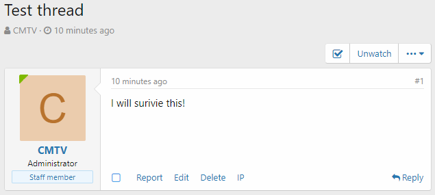

準則¶
當 XenForo 需要根據一些 用戶選擇的 條件（準則）來測試某些東西（用戶/頁面/帖子......）時，它使用準則系統。
使用到準則系統的一些地方：
- 成就
- 用戶組提升
- 論壇公告
附加元件也可以使用這個系統。
準則類型¶
考慮以下準則： - 用戶 有/沒有 頭像 - 用戶有 300 多條留言 - 用戶正在建立一個主題 - 目前用戶選擇的導覽標籤為 "會員"
前兩個準則是指用戶本人。 其餘的準則是指他目前在論壇上的位置。 這樣看起來我們應該有不同類別或 類型 的準則。
在 XenForo 中，有兩種開箱即用的準則類型：
- 用戶準則 — 處理關於用戶本身的準則
- 頁面準則 — 處理用戶目前位置的準則 + 時間準則
一些附加元件也可以新增自己的準則類型。
從程式碼的角度來看，準則類型只是一個抽像類 AbstractCriteria 的子類。 它們包含用於處理某些類型的選定準則程式碼。
反之，AbstractCriteria 則提供了處理準則的通用方法，而不論其含義如何。
準則¶
準則是一個用戶可選擇的預定義條件。
為什麼是可選的？ 因為管理員/用戶可以選擇它們（記得成就建立過程）。
為什麼是預定義？ 因為 XenForo 已經知道如何處理它們（使用準則類方法）。
每個準則由兩部分組成：規則 和（可選）資料。
規則¶
準則規則簡直就是 蛇形命名 的痛處 (words_are_separated_with_underscore_character)。
它有兩個基本宗旨：
資料¶
它只是一個可選的附加準則資料陣列。 例如，"用戶至少發佈了 X 條留言" 準則有一個包含一個要素的資料陣列：數則消息。
準則系統如何運作¶
在本節中，我們將介紹準則系統是如何從 A 到 Z 運作的。
模板¶
這一切都要從模板程式碼說起。 以下是準則在模板中看起來的樣子：
<xf:checkbox label="Criteria container">
<!-- 準則 -->
<xf:option name="foo_criteria[criterion_1_rule][rule]" value="criterion_1_rule" ... />
<!-- 含資料的準則 -->
<xf:option name="bar_criteria[criterion_2_rule][rule]" value="criterion_2_rule" ... >
<xf:... name="bar_criteria[criterion_2_rule][data][param_1]" ... />
<xf:... name="bar_criteria[criterion_2_rule][data][param_2]" ... />
</xf:option>
</xf:checkbox>
如你所見，準則只是一個核取方塊，裡面有可選的輸入欄位（準則資料）。 我們來分析一下程式碼：
foo_criteria和bar_criteria是 input 容器，通常foo和bar部分是指準則類型。 例如，user_criteria[...]讓我們知道這個準則屬於用戶準則。value="criterion_1_rule"和value="criterion_2_rule"顯然是準則的規則。
Note
請記住，name 屬性中的 criterion_1/2_rule 不一定是準則規則！ 這些只是 input 容器的名稱。 你可以輕而易舉地寫下 <xf:option name="foo[bar][rule]" value="criterion_rule" />，它就會正確地運作。 準則規則會是 criterion_rule，而不是 bar。
(可選) 儲存選定的準則¶
在 Controller 內部，可以將上一節的準則表單資料進行篩選、編碼，並儲存在 mediumblob 類型的資料庫 Column 中，以便更好地使用：
$fooCriteriaInput = $this->filter('foo_criteria', 'array');
$barCriteriaInput = $this->filter('bar_criteria', 'array');
$form->basicEntitySave($bazEntity, [
'foo_criteria' => $fooCriteriaInput,
'bar_criteria' => $barCriteriaInput
]);
$bazEntity Structure 示例：
public static function getStructure(Structure $structure)
{
$structure->table = 'xf_baz';
$structure->shortName = 'XF:Baz';
$structure->primaryKey = 'baz_id';
$structure->columns = [
'baz_id' => ['type' => self::UINT, 'autoIncrement' => true],
'foo_criteria' => ['type' => self::JSON_ARRAY, 'default' => [], 'required' => 'please_select_criteria_that_must_be_met'],
'bar_criteria' => ['type' => self::JSON_ARRAY, 'default' => []]
];
return $structure;
}
準則物件¶
為了使用準則系統，我們需要從選定的準則表單資料中建立一個準則物件，這可以通過 app 的 criteria() 方法來完成：
/** @var \Qux\Criteria\Foo $fooCriteria */
$fooCriteria = \XF::app()->criteria('Qux:Foo', $bazEntity->foo_criteria);
/** @var \Qux\Criteria\Bar $barCriteria */
$barCriteria = \XF::app()->criteria('Qux:Bar', $bazEntity->bar_criteria);
從現在開始，我們可以使用所有的 AbstractCriteria 功能，加上我們在子類 Foo/Bar 中額外編寫的所有內容。
匹配¶
當我們想檢查某個東西（User）是否符合選定的準則時，我們可以使用 isMatched 方法：
$visitor= \XF::visitor();
if ($fooCriteria->isMatched($visitor))
{
// 訪客符合所有選定的準則
}
else
{
// 訪客不符合一個或多個準則
}
isMacthed() 將準則規則轉換為帶有 _match 前綴的駝峰式命名方法： criterion_1_rule > _matchCriterion1Rule，並嘗試在準則：型 class 中找到這樣一個方法（在我們的例子中是 Foo 類）：
// Qux/Criteria/Foo.php
protected function _matchCriterion1Rule(array $data, \XF\Entity\User $user)
{
/* ... 處理準則 ... */
return true; // 用戶符合目前準則
/* 或者 */
return false; // 用戶不符合目前準則
}
如果在 class 中找不到某個方法，isMatched() 會呼叫 isUnknownMatched()，其行為可以在 AbstractCriteria 祖先中設定（預設返回 false）。
如果沒有選定任何準則，isMatched() 將返回 $matchOnEmpty 變數，預設為 true。 你可以在使用 isMatched() 方法 之前 呼叫 $crteriaObj->setMatchOnEmpty(false) 來改變這種行為：
$visitor= \XF::visitor();
$fooCriteria->setMatchOnEmpty(false);
if ($fooCriteria->isMatched($visitor))
{
// 訪客符合所有選定的準則
}
else
{
// 訪客不符合一個或多個準則
}
準則是如何運作的 (範例)¶
想像一下，你想給所有擁有頭像並獲得至少 5 個讚的用戶頒發一個成就。
在建立成就時，你選擇 "用戶有頭像"（規則 has_avatar）和 "用戶至少收到 X 個讚"（規則 like_count）準則。 最後一個還具有一個包含一個元素的資料陣列：喜歡的數量。
您所選擇的準則儲存在 xf_trophy 資料表中的 user_criteria column。
當 XenForo 決定檢查，是否給用戶頒發成就時，它會將規則轉換為駝峰式命名方法：
like_count>_matchLikeCount()has_avatar>_matchHasAvatar()
由於所選的兩個準則都是用戶準則，因此 XenForo 滿足用戶準則 class，並試圖在其中找到這些方法：
// XF/Criteria/User.php
//...
protected function _matchLikeCount(array $data, \XF\Entity\User $user)
{
return ($user->like_count && $user->like_count >= $data['likes']);
}
//...
protected function _matchHasAvatar(array $data, \XF\Entity\User $user)
{
return $user->user_id && ($user->avatar_date || $user->gravatar);
}
//...
如果 所有 位置的方法都返回 true，我們的用戶就符合選定的準則，因此將獲得一個成就。
如果在 User 準則類中找不到某些方法，XenForo 會呼叫 isUnknownMatched() 方法，進而觸發 criteria_user 事件，允許附加元件製作者新增他們的自定義準則處理程式。 （參見"自定義用戶/頁面準則範例"）。
額外準則資料¶
有時，在編寫準則模板程式碼時，你需要訪問額外的資料，而這些資料不是通過 view 參數傳遞的。
這就是 getExtraTemplateData() 方法存在的意義。 預設情況下，它包含現有的用戶組、語言、風格樣式、時區。
你可以在你的自定義準則類型 class 中覆蓋這個方法。
在自定義準則類型中新增資料¶
在您的自定義準則 class 中覆蓋 getExtraTemplateData() 方法：
public function getExtraTemplateData()
{
$templateData = parent::getExtraTemplateData();
$additionalData = [];
/** @var \XF\Repository\Smilie $smilieRepo */
$smilieRepo = \XF::repository('XF:Smilie');
$additionalData['smilies'] = $smilieRepo->findSmiliesForList()->fetch();
return array_merge($templateData, $additionalData);
}
在現有準則類型中新增資料¶
你可以使用 criteria_template_data 事件監聽器來新增你自己的額外準則資料：
public static function criteriaTemplateData(array &$templateData)
{
/** @var \XF\Repository\Smilie $smilieRepo */
$smilieRepo = \XF::repository('XF:Smilie');
$templateData['smilies'] = $smilieRepo->findSmiliesForList()->fetch();
}
"helper_criteria" 模板¶
每當你作為附加元件製作者想讓目標 用戶/管理員 有辦法選擇 用戶/頁面/其他附加元件 的準則時（甚至全部一起），你可以簡單地使用 helper_criteria。
簡而言之，helper_criteria 是一個允許在多處使用基於準則類型的核取方塊介面的管理模板，無需複製貼上相同程式碼。
helper_criteria 包含 兩個 類型的巨集：*criteria_name*_tabs 和 *criteria_name*_panes，適用於每個準則類型。 例如：用戶準則類型的 user_tabs 和 user_panes 巨集。
標籤¶
標籤用於區分他們所使用模板內的不同準則類型：

使用標籤時，第一個標籤往往包含與準則無關的欄位/選項。 然後到準則標籤。
在上圖中，第一個標籤包含通知的選項。 紅框中的前兩個標籤與用戶準則類型有關。 最後一個與頁面準則類型有關。
helper_criteria 中的標籤被歸類在準則類型巨集下：
<xf:macro name="foo_tabs" arg-container="" arg-active="">
<xf:set var="$tabs">
<a class="tabs-tab{{ $active == 'foo' ? ' is-active' : '' }}"
role="tab" tabindex="0" aria-controls="{{ unique_id('criteriaFoo') }}">Foo criteria</a>
<a class="tabs-tab{{ $active == 'foo_extra' ? ' is-active' : '' }}"
role="tab" tabindex="0" aria-controls="{{ unique_id('criteriaFooExtra') }}">Foo criteria extra</a>
</xf:set>
<xf:if is="$container">
<div class="tabs" role="tablist">
{$tabs|raw}
</div>
<xf:else />
{$tabs|raw}
</xf:if>
</xf:macro>
In the code above, foo is a criteria type. It has two tabs, one for general foo criteria and another for extra foo criteria.
在上面的程式碼中，foo 是一個準則類型。 它有兩個標籤，一個用於一般的 foo 準則，另一個用於額外的 foo 準則。
Panes (窗格)¶
Panes 僅僅包含準則。
和標籤一樣，helper_criteria 中的 Panes 也是按照準則類型巨集來歸類的：
<xf:macro name="foo_panes" arg-container="" arg-active="" arg-criteria="!" arg-data="!">
<xf:set var="$panes">
<li class="{{ $active == 'foo' ? ' is-active' : '' }}" role="tabpanel" id="{{ unique_id('criteriaFoo') }}">
<xf:checkboxrow label="Criteria group 1">
<xf:option name="foo_criteria[criterion_1_rule][rule]" value="criterion_1_rule" ... />
<xf:option name="foo_criteria[criterion_2_rule][rule]" value="criterion_2_rule" ... />
</xf:checkboxrow>
<xf:checkboxrow label="Criteria group 2">
<xf:option name="foo_criteria[criterion_3_rule][rule]" value="criterion_3_rule" ... />
<xf:option name="foo_criteria[criterion_4_rule][rule]" value="criterion_4_rule" ... />
</xf:checkboxrow>
</li>
</xf:set>
<xf:if is="$container">
<ul class="tabPanes">
{$panes|raw}
</ul>
<xf:else />
{$panes|raw}
</xf:if>
</xf:macro>
使用 "helper_criteria"¶
要使用 "helper_criteria" 的功能，你需要加入它的巨集。
準備資料¶
如果您 沒有 您所選定的準則儲存在資料庫中的某個地方，或者您要使用的準則類型 不需要 任何額外的資料，可以跳過本節。
首先，您需要檢索已儲存的選定準則，並從中建立一個準則物件。 在本節中，我們將以 Page 準則為例子：
$savedCriteria = /* Retrieve it somehow... */
// 準則物件
$criteria = $this->app()->criteria('XF:Page', $savedCriteria)->getCriteriaForTemplate();
// 準則額外資料
$criteriaData = $criteria->getExtraTemplateData();
$viewParams = [
/* ... */
'criteria' => $criteria,
'criteriaData' => $criteriaData
];
return $this->view(/* ... */, $viewParams);
包含沒有內容的標籤¶
要包含沒有內容的標籤準則，你需要使用 <xf:macro... 標籤，並將 arg-container 屬性設定為 0。
<xf:macro template="helper_criteria" name="page_panes" arg-container="0" arg-criteria="{$criteria}" arg-data="{$criteriaData}" />
如果你沒有保存準則，你可以直接將空陣列 {{ [] }} 傳遞給 arg-criteria 屬性。 不要忘記把 page_panes 中的 page 替換成你想使用的準則類型名稱。
請記住，所有的準則都是用 <li> 標籤包住的，所以你需要應用一些 CSS 樣式（例如 list-style-type: none;）。
有內容的標籤¶
為了使用準則標籤，你需要組織頁面。 堅持以下範例結構：
<xf:form ... class="block">
<div class="block-container">
<!-- 標籤 -->
<h2 class="block-tabHeader tabs hScroller" data-xf-init="h-scroller tabs" role="tablist">
<span class="hScroller-scroll">
<!-- Main tab where fields/options are located -->
<a class="tabs-tab is-active" role="tab" tabindex="0" aria-controls="MAIN_TAB_ID">Main tab title</a>
<!-- 準則標籤 -->
<xf:macro template="helper_criteria" name="page_tabs" arg-userTabTitle="Custom tab name (optionally)" />
</span>
</h2>
<!-- 窗格 -->
<ul class="block-body tabPanes">
<!-- Main pane -->
<li class="is-active" role="tabpanel" id="MAIN_TAB_ID">
<!-- Fields and options -->
</li>
<!-- 準則窗格 -->
<xf:macro template="helper_criteria" name="page_panes"
arg-criteria="{$criteria}"
arg-data="{$criteriaData}" />
</ul>
<xf:submitrow sticky="true" icon="save" />
</div>
</xf:form>
同樣，如果你沒有任何準則數據，或者甚至假設沒有，請將 {{ [] }} 傳遞給 arg-criteria 屬性。
在 "helper_criteria" 中添加自定義準則類型¶
如果你想在 helper_criteira 模板中新增自定義準則類型，你需要建立一個 helper_criteria 模板的模板修改。
進入 Admin CP 中的 "外觀 > 模板修改"，切換到 "管理" 標籤，點選 "新增模板修改" 按鈕。
我們要在模板的最底部新增我們的標籤和窗格，所以將 "搜尋類型" 切換為 "正規表達式"。
在 "查詢" 欄中輸入 /$/。
最後，在 "替換" 欄位中新增標籤和窗格的巨集程式碼。 舉例：
<xf:macro name="foo_tabs" arg-container="" arg-active="">
<xf:set var="$tabs">
<a class="tabs-tab{{ $active == 'foo' ? ' is-active' : '' }}"
role="tab" tabindex="0" aria-controls="{{ unique_id('criteriaFoo') }}">Foo criteria</a>
<a class="tabs-tab{{ $active == 'foo_extra' ? ' is-active' : '' }}"
role="tab" tabindex="0" aria-controls="{{ unique_id('criteriaFooExtra') }}">Foo criteria extra</a>
</xf:set>
<xf:if is="$container">
<div class="tabs" role="tablist">
{$tabs|raw}
</div>
<xf:else />
{$tabs|raw}
</xf:if>
</xf:macro>
<xf:macro name="foo_panes" arg-container="" arg-active="" arg-criteria="!" arg-data="!">
<xf:set var="$panes">
<li class="{{ $active == 'foo' ? ' is-active' : '' }}" role="tabpanel" id="{{ unique_id('criteriaFoo') }}">
<xf:checkboxrow label="Criteria group 1">
<xf:option name="foo_criteria[criterion_1_rule][rule]" value="criterion_1_rule" ... />
<xf:option name="foo_criteria[criterion_2_rule][rule]" value="criterion_2_rule" ... />
</xf:checkboxrow>
<xf:checkboxrow label="Criteria group 2">
<xf:option name="foo_criteria[criterion_3_rule][rule]" value="criterion_3_rule" ... />
<xf:option name="foo_criteria[criterion_4_rule][rule]" value="criterion_4_rule" ... />
</xf:checkboxrow>
</li>
</xf:set>
<xf:if is="$container">
<ul class="tabPanes">
{$panes|raw}
</ul>
<xf:else />
{$panes|raw}
</xf:if>
</xf:macro>
現在，您可以在任何地方使用您的準則（請參見 "使用helper_criteria" )。
自定義用戶/頁面準則範例¶
比方說，我們想建立一個準則來檢查我們的用戶是否在單則留言上有 X 個或更多的讚。
由於我們的準則是指用戶，所以我們將建立一個屬於用戶準則的準則。
增加模板修改¶
首先，我們需要將我們的準則新增到用戶準則列表中。 進入 Admin CP 中的 "模板修改" 頁面，選擇 "Admin" 標籤，點選右上角的 "新增模板修改" 按鈕。
Warning
如果沒有 "Admin" 標籤，請確保你已經啟用了開發模式。
我們將修改 helper_criteria 模板，因此將其寫入到 "模板" 欄位。 在這個例子中，我將使用 likes_on_single_message "修改 key 值" 來修改這個模板。
我們的準則是關於留言的點讚數。 這意味著它應該在 "內容和成就" 部分下。 這表示我們只需要找到 <！--[XF:user:content_bottom]-->，然後用下面的程式碼替換。
<xf:option name="user_criteria[likes_on_single][rule]" value="likes_on_single" selected="{$criteria.likes_on_single}" label="Likes on single message:">
<xf:numberbox name="user_criteria[likes_on_single][data][likes]" value="{$criteria.likes_on_single.likes}" size="5" min="0" step="1" />
</xf:option>
$0
從這一刻起，我們已經可以看到，甚至可以在建立成就、通知和提升用戶組時為我們的準則設定一個值。
增加程式碼事件監聽器¶
我們已經建立了我們的準則。 但對於 XenForo 來說，它是未知的，當符合這種準則時，它總是返回 "false"。 我們需要告訴 XenForo，當它符合未知準則時該怎麼做。
進入 "開發 > 程式碼事件監聽器" 頁面，點選 "新增程式碼事件監聽器" 按鈕。
在 "監聽事件" 欄位中選擇 criteria_user（user 因為我們的準則屬於用戶準則）。 在 "執行 callback" 欄位中，我們應該指定匹配準則時要呼叫的類和方法。
在 addon 根目錄下建立一個檔案 Listener.php，如果你還沒有的話，在那裡新增一個新的方法 criteriaUser：
<?php
namespace YOUR_ADDON_ID;
class Listener
{
public static function criteriaUser($rule, array $data, \XF\Entity\User $user, &$returnValue)
{
}
}
你可以用 YOUR_ADDON_ID\Listener 和 criteriaUser 分別填寫 "Class" 和 "Method" 欄位。
處理準則¶
由於我們的 criteriaUser 方法對每個未知的準則都會被觸發，我們需要確保 $rule 等於 likes_on_single （我們在 HTML 標籤中指定的規則）。
public static function criteriaUser($rule, array $data, \XF\Entity\User $user, &$returnValue)
{
switch ($rule)
{
case 'likes_on_single':
/** 處理程式碼在這裡! */
break;
}
}
現在，我們需要寫程式碼來實際檢查一個用戶是否有 X 個或更多讚的留言。
這可以通過簡單的 SQL 查詢輕鬆實現，從 xf_post 中選擇一條超過 X 個讚的記錄（ likes column ），並且 user_id 等於目前匹配的用戶 ID。
所以，下面是查詢語句：
SELECT `likes` FROM `xf_post` WHERE `user_id` = ? ORDER BY `likes` DESC LIMIT 1
以及方法程式碼：
public static function criteriaUser($rule, array $data, \XF\Entity\User $user, &$returnValue)
{
switch ($rule)
{
case 'likes_on_single':
// 獲取資料庫
$db = \XF::db();
// 用於選擇單個用戶帖子的最大點讚數的資料庫查詢
$query = "SELECT `likes` FROM `xf_post` WHERE `user_id` = ? ORDER BY `likes` DESC LIMIT 1";
// 檢索最大點讚數
$likes = $db->fetchOne($query, [$user->user_id]);
// 檢查我們是否有來自資料庫的結果(我們期望有一個數字)
if (is_int($likes)) {
// 如果用戶的資訊有 X 個或更多的讚，則返回 true；如果沒有，則返回 false
$returnValue = ($likes >= $data['likes']);
} else {
$returnValue = false;
}
break;
}
}
要注意以下幾點：
- 我們使用
$user變數來檢索目前匹配的用戶。 我們可以使用這個變數，因為我們的準則屬於 用戶 準則。 - 我們可以通過
$data陣列訪問資料。 它包含了我們在 模板修改中已新增 的欄位的資料。 我們只新增了一個<xf:numberbox...，其中name屬性等於user_criteria[likes_on_single][data][likes]。 這就是為什麼我們可以在上面的程式碼中使用$data['likes']。
現在一切都搞定了。 讓我們測試一下吧！
測試（成就）¶
建立一個 "人人為我" 的成就。 在 "用戶準則" 標籤上，"單則留言的點讚數" 欄位，例如，5。
接下來，在你論壇的某處建立一個測試留言，然後用五個不同的用戶點讚五次（或者直接手動設定 likes 欄的值）。
然後，進入 "工具 > 計畫任務"，通過點擊執行按鈕 (循環-箭頭) "更新用戶成就值" 計畫。

很好！
Warning
如果您沒有獲得 "人人為我" 成就，請嘗試登出、登入並重新執行 "更新用戶成就值" 計畫。
測試（通知）¶
進入 "聯絡 > 通知"，點選 "新增通知" 按鈕。 在 "用戶準則" 標籤上，將 "單則留言的點讚數" 欄位同樣設定為 5。 儲存通知。
接下來，在你論壇的某處建立一個測試留言，然後用五個不同的用戶點讚五次（或者直接手動設定 likes 欄的值）。
現在，你應該會看到一則通知：
你可以 下載 基於這個範例構建的附加元件資源 (2.0.10)。
自定義準則類型範例¶
想像一下，我們正在建立一個附加元件（附加元件 ID：PostsRemover），用於刪除所有符合選定準則的帖子。 一個可用準則的列表：
- 帖子至少有 X 個點讚數
- 帖子作者有一個 X 用戶名
- 帖子至少被編輯了 X 次
- 帖子被編輯的次數不超過 X 次
- 帖子在 X 之前發表
- 帖子發表於 X 之後
顯然，對於這樣的準則，我們需要一種新的準則類型：帖子準則。
Criteria type class 準則類型 class¶
我們應該先在 addon 的 Criteria 目錄下建立一個繼承 AbstractCriteria 的新 class Post：
<?php
namespace PostsRemover\Criteria;
use XF\Criteria\AbstractCriteria;
class Post extends AbstractCriteria
{
}
現在我們需要為 addon 支援的所有準則寫程式碼。 在這個例子中，我將為上面列表中的前三個準則寫程式碼：
<?php
namespace PostsRemover\Criteria;
use XF\Criteria\AbstractCriteria;
class Post extends AbstractCriteria
{
// 帖子至少有 X 個點讚數
protected function _matchLikeCount(array $data, \XF\Entity\Post $post)
{
return ($post->likes && $post->likes >= $data['likes']);
}
// 帖子作者有一個 X 用戶名
protected function _matchUsername(array $data, \XF\Entity\Post $post)
{
return $post->username === $data['name'];
}
// 帖子至少被編輯了 X 次
protected function _matchEditedCount(array $data, \XF\Entity\Post $post)
{
return $post->edit_count && $post->edit_count >= $data['count'];
}
/* ================ 處理其他準則 ================ */
}
isMatched(...) 方法用於呼叫我們剛才建立的 _match 方法，只接受 User 實體，我們要寫一個自定義的 isMatched()、 isUnknownMatched() 和 isSpecialMatched() 方法的變體。
由於我們正在建立帖子準則，我們需要建立自己的 isMatchedPost() 方法：
public function isMatchedPost(\XF\Entity\Post $post)
{
if (!$this->criteria)
{
return $this->matchOnEmpty;
}
foreach ($this->criteria AS $criterion)
{
$rule = $criterion['rule'];
$data = $criterion['data'];
$specialResult = $this->isSpecialMatchedPost($rule, $data, $post);
if ($specialResult === false)
{
return false;
}
else if ($specialResult === true)
{
continue;
}
$method = '_match' . \XF\Util\Php::camelCase($rule);
if (method_exists($this, $method))
{
$result = $this->$method($data, $post);
if (!$result)
{
return false;
}
}
else
{
if (!$this->isUnknownMatched($rule, $data, $post))
{
return false;
}
}
}
return true;
}
protected function isSpecialMatchedPost($rule, array $data, \XF\Entity\Post $post)
{
return null;
}
protected function isUnknownMatchedPost($rule, array $data, \XF\Entity\Post $post)
{
return false;
}
我們只需用 isMatched(...) 方法程式碼將 User 實體類型的 $user 變數替換為 Post 實體類型的 $post 變數。
由於我們不打算處理特殊和未知的準則，我們在 isSpecialMatchedPost 中返回 null，在 isUnknownMathcedPost 方法中返回 false。
模板¶
拋開新增 admin 路由、編寫 Controller 和在後台做其他操作的過程，直接跳到我們頁面的模板程式碼：
<xf:title>Posts Remover</xf:title>
<xf:form action="{{ link('posts-remover/remove') }}" ajax="true" class="block">
<div class="block-container">
<xf:checkboxrow label="Post criteria">
<xf:option label="Post has at least X likes" name="post_criteria[like_count][rule]" value="like_count">
<xf:numberbox name="post_criteria[like_count][data][likes]" size="5" min="0" step="1" />
</xf:option>
<xf:option label="Post author has an X username" name="post_criteria[username][rule]" value="username">
<xf:textbox name="post_criteria[username][data][name]" ac="true" />
</xf:option>
<xf:option label="Post was edited at least X times" name="post_criteria[edited_count][rule]" value="edited_count">
<xf:numberbox name="post_criteria[edited_count][data][count]" size="5" min="0" step="1" />
</xf:option>
</xf:checkboxrow>
<!-- 其他準則的模板程式碼 -->
<xf:submitrow sticky="true" icon="delete"/>
</div>
</xf:form>
匹配準則¶
在我們頁面的 Controller 中，我們需要建立一個名為 actionRemove 的方法來處理 "移除" 按鈕的點選：
public function actionRemove()
{
}
首先，讓我們從頁面表單中檢索 post_criteria 陣列：
public function actionRemove()
{
$postCriteriaInput = $this->filter('post_criteria', 'array');
}
其次，我們需要從檢索到的頁面表單資料中建立一個準則物件：
public function actionRemove()
{
$postCriteriaInput = $this->filter('post_criteria', 'array');
/** @var \PostsRemover\Criteria\Post $postCriteria */
$postCriteria = $this->app()->criteria('PostsRemover:Post', $postCriteriaInput);
}
預設情況下，發佈帖子 將匹配 empty 準則（當沒有選擇任何內容時），這將導致所有論壇帖子都被刪除。 為了避免這種情況，我們需要通過 setMatchOnEmpty() 方法手動設定匹配 empty 準則的結果：
public function actionRemove()
{
$postCriteriaInput = $this->filter('post_criteria', 'array');
/** @var \PostsRemover\Criteria\Post $postCriteria */
$postCriteria = $this->app()->criteria('PostsRemover:Post', $postCriteriaInput);
$postCriteria->setMatchOnEmpty(false); // 如果沒有選定準則，則不會刪除任何內容
}
最後，我們需要根據選定的準則來匹配所有論壇帖子。 如果帖子符合準則，我們將刪除它。
public function actionRemove()
{
$postCriteriaInput = $this->filter('post_criteria', 'array');
/** @var \PostsRemover\Criteria\Post $postCriteria */
$postCriteria = $this->app()->criteria('PostsRemover:Post', $postCriteriaInput);
$postCriteria->setMatchOnEmpty(false); // 如果沒有選擇準則，則不會刪除任何內容
// 取得所有論壇帖子
$posts = $this->finder('XF:Post')->fetch();
$deletedCounter = 0;
/** @var \XF\Entity\Post $post */
foreach ($posts as $post)
{
if ($postCriteria->isMatchedPost($post)) // 針對所選定的準則檢查帖子
{
$post->delete(); // 如果帖子符合選定的準則，則將其刪除。
$deletedCounter++;
}
}
return $this->message('Done! ' . $deletedCounter . ' posts were removed!');
}
Note
請注意，對於 XenForo 2.1 以下的版本，我們使用 isMatchedPost($post) 方法！
Warning
一般來說，一次從資料庫中檢索所有的實體是一種不好的做法（上面程式碼中的 $this->finder('XF:Post')->fetch();）。 論壇的帖子可能有幾百萬個，如果一次全部選取會是一個非常漫長的過程，最後可能還會出現錯誤。
考慮使用 Job 系統來處理數十個（100+）資料庫項目。
測試¶
是時候測試我們的自定義準則類型了！
我在我的測試論壇上建立了三個帖子。 第一個帖子被點讚 500 次，第二個帖子被編輯 5 次。 第三個只是一個原封不動的沒有被點讚的帖子。

現在，在我們的 "帖子刪除器" Admin CP 頁面上，讓我們選擇 "帖子至少有 X 個點讚數"（值為 250）和 "帖子至少被編輯過 X 次"（值為 5）。

當我按下 "刪除" 鍵時，我看到一條即時消息，告訴我什麼都沒有刪除。 為什麼呢？ 很顯然，因為在 同一時間內 沒有至少 250 個點讚數和至少編輯過 5 次的帖子。
所以我們只需要選擇第一個準則，然後點選 "刪除"。 這樣就會刪除一個有 500 個點讚數的帖子。 接下來，我們只需要選擇最後一個準則，然後預先進行刪除。 有編輯過 5 次的帖子將被刪除。
結果，只有一個測試帖子在測試中倖存下來：

你可以 下載 基於這個範例 (2.0.10) 所構建的插件原始碼。 在 Admin CP 裡你可以在 "工具" 的部分找到 "帖子刪除器"。